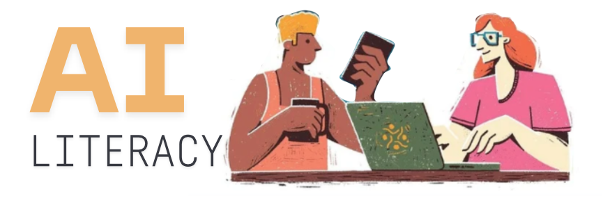

The following are things that I found thought provoking in my reading about AI.
Interesting Articles
- Machines of Loving Grace By Dario Amodei
- Dario Amodei’s take on how AI Could Transform the World for the Better
- Note: Dario Amodei is the CEO of Anthropic
- The Adolescnce of Technology By Dario Amodei
- Dario Amodei’s take on Confronting and Overcoming the Risks of Powerful AI
- Something Big is Happening By Matt Schumer
- Matt Schumer makes a case for everyone to be using AI and compares the current moment to the weeks before Covid-19
- Note: Matt Schumer is the CEO of an AI start-up
- This take in my opinion is overly alarmist
- How to Stay Sane in the AI Skills Race By Callum Borchers
- Callum Borchers is a Wall Street Journal Columnist and Senior Lecturer at Bentley University
On The Dangers of Stochastic Parrots By EM Bender et. al, 2021
AI Is Killing The Cover Letter By Judd Kessler
- Judd Kessler is a Professor in the Business Economics and Public Policy Department at the University of Pennsylvania’s Wharton School of Business.
- Anthropic just dropped its core AI safety promise, and that should worry you By Mahnoor Faisal for XDA
Interesting Books
Podcasts
- What happens when artificial intelligence quietly reshapes our lives? By Tonya Mosley and Kashmir Hill on NPR
- Kashmir Hill is the author of Your Face Belongs to Us: A Tale of AI, a Secretive Startup, and the End of Privacy
- Can algorithms deliver justice or do we need human judgement On Doha Debates
- This was a debate between Roman Yampolskiy a Professor of Computer Science at the University of Louisville known for his work in cybersecurity and AI safety and Nahiba Syed the Executive Director of the Mozilla Foundation and a free speech lawyer.
- Roman Yampolskiy argues that the future of law is computational, while Nabiha Syed insists justice is too human to be fully automated (can AI mediate a divorce?).
The perspectives represented here do not necessarily reflect my opinions.
There is no inherent order in which these articles and books are listed - just the order I remembered them in
If you come across anything that you think people should be reading please send them to me at okorie1@stolaf.edu so I can include them on this page